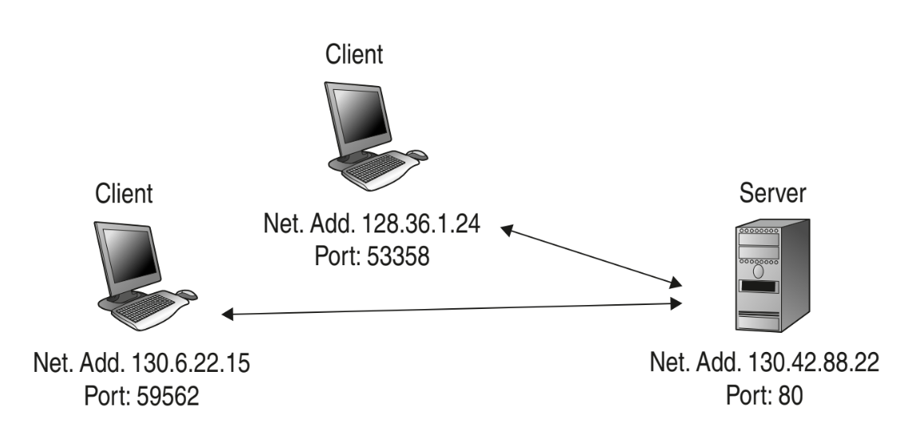

In breve
Una socket è un'interfaccia software che consente a due applicazioni di comunicare tra loro, tramite internet. Sta alla base della comunicazione di rete, in particolare nei protocolli applicativi come HTTP o FTP. Le socket sono fondamentali per la trasmissione di dati in architetture come Client-Server e Peer-to-Peer.
Scopri di più
La pila ISO OSI
Scopri di più sul funzionamento di questo standard ampiamente adottato in tutto il mondo.
Vai alla pagina

L'architettura Client-Server
Scopri di più sul su questo paradigma base della comunicazione
Vai alla pagina